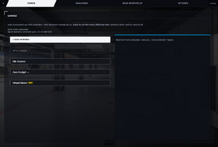

OmegaSim Wiki – die Idee dazu stammt von Gnen54. Hier stehen die offenen Artikel von Nutzer Luuke42 unter der Lizenz CC BY-SA 4.0.
Hauptseite/de
Dieses Wiki sammelt Wissen und Hilfe rund um OmegaSim, eine freie App, mit der man Carrera HYBRID-Autos per Bluetooth steuert: mit eigenem Fahrgefühl, Rennen, NPC-Gegnern, Safety Car, Boxenstopps und Mehrspieler. Derzeit gibt es hier 66 Artikel.
Chrome oder Edge mit Web Bluetooth, am PC oder Android-Handy
nötig für WLAN-Mehrspieler und den schnellsten Funkweg
MIT-Lizenz, Fehler melden über „Issues“
Erste Schritte
- OmegaSim im Browser öffnen oder die Android-App installieren.
- Auto einschalten und in der Garage mit + Auto verbinden koppeln.
- Unter Optionen → Fahrgefühl eine Voreinstellung wählen, für den Anfang Arcade.
- Im Cockpit losfahren oder unter Rennen eine Rennart starten.
- Hängt das Auto: Keine Reaktion des Fahrzeugs.


Hardware
- Carrera HYBRID – das Auto: Aufbau, Sensor, Akku, Bluetooth
- Strecke – Bahnteile, Ausdruck-Strecke und Streckenscan
Software
- Firmware – was über die Software im Auto bekannt ist
- Original-App – die Hersteller-App und was OmegaSim anders macht
- OmegaSim – Überblick über die App
- OmegaBle – das Bluetooth-Plugin der Android-App
OmegaSim im Detail
| Fahren | Fahrverhalten · Verschleiß · Virtuelles Fahren |
|---|---|
| Rennen | Rennarten · Boxenstopp · Challenges |
| Gegner | NPC-Fahrverhalten · Safety Car und Reinigungswagen |
| Strecke | Strecken- und Raum-Editor |
| Zusammen | Mehrspieler (WLAN und mehrere Spieler an einem Gerät) |
| Grundlagen | Hexadezimalsystem · Bluetooth Low Energy · Aufbau von OmegaSim · Vibe-Coding · Glossar |
Rund um OmegaSim
- Wunschliste – gewünschte Funktionen und alles, was noch in Arbeit ist
- Andere Apps und Initiativen – Original-App, Community-Apps, Zubehör
Zubehör
- CH ControlBox – RC-Funke als Bluetooth-Gamepad für OmegaSim
- Startampel – echte Startampel am Tisch (Raspberry Pi / Pico)
- Onboard-Kamera und Karosserien – Livebild aus dem Auto und Karosserien mit eingebauter Kamera (in Arbeit)
Fehlerbehebung
- Fehlerbilder und Abhilfe – hohe Latenz, springende Autos, Android-Einstellungen, kompatible Browser
- Keine Reaktion des Fahrzeugs – Auto steht mit Licht und eingeschlagenen Rädern und lässt sich nicht koppeln
Mitmachen
- Mitmachen – Artikel schreiben und verbessern, mit und ohne KI
- Anleitung für KIs – Arbeitsweise für KI-Assistenten, die am Wiki oder an OmegaSim arbeiten
- Alle Seiten · Kategorien · Gewünschte Seiten
Zuletzt bearbeitet
Ganz oben steht die zuletzt bearbeitete Seite.
Liste von Abkürzungen:
- N
- Neue Seite (siehe auch die Liste neuer Seiten)
- K
- Kleine Änderung
- B
- Änderung durch einen Bot
- (±123)
- Die Änderung der Seitengröße in Bytes
18. November 2026
- UnterschiedVersionen Original-App 17:03 +7 Luuke42 Diskussion Beiträge (Wiki-Update: Lizenz von MIT auf AGPL-3.0-or-later)
- UnterschiedVersionen OmegaSim 17:03 +14 Luuke42 Diskussion Beiträge (Wiki-Update: Lizenz von MIT auf AGPL-3.0-or-later)
- UnterschiedVersionen Aufbau von OmegaSim 17:02 +118 Luuke42 Diskussion Beiträge (Wiki-Update: Lizenz von MIT auf AGPL-3.0-or-later)
- UnterschiedVersionen Anleitung für KIs 17:02 +1 Luuke42 Diskussion Beiträge (Wiki-Update: Lizenz von MIT auf AGPL-3.0-or-later)
- UnterschiedVersionen Mitmachen 17:02 +7 Luuke42 Diskussion Beiträge (Wiki-Update: Lizenz von MIT auf AGPL-3.0-or-later)
Alle Änderungen: Letzte Änderungen · Neue Artikel: Neue Seiten
Seitenübersicht
Alle Seiten des Wikis mit Bereich, Inhalt, letzter Änderung, letztem Bearbeiter und Größe in Byte. Die drei letzten Spalten liest das Wiki bei jedem Aufruf selbst aus.
| Bereich | Seite | Inhalt | Zuletzt geändert | von | Byte |
|---|---|---|---|---|---|
| Grundlagen | Hexadezimalsystem | Zahlensysteme, Bits und Bytes, Hex-Codes in OmegaSim | 27.10.2026 | Luuke42 | 28,171 |
| Grundlagen | Bluetooth Low Energy | Funk, GATT, Charakteristiken, Latenz – wie die Übertragung funktioniert | 27.10.2026 | Luuke42 | 35,483 |
| Grundlagen | Aufbau von OmegaSim | Programmiersprachen, Architektur, Build, Updates | 18.11.2026 | Luuke42 | 35,519 |
| Grundlagen | Vibe-Coding | Programmieren durch Beschreiben – wie OmegaSim entsteht | 27.10.2026 | Luuke42 | 16,048 |
| Grundlagen | Glossar | Alle Fachbegriffe von A bis Z | 18.11.2026 | Luuke42 | 23,256 |
| Hardware | Carrera HYBRID | Das Auto: Aufbau, Sensor, Akku, Protokoll | 27.10.2026 | Luuke42 | 35,930 |
| Hardware | Strecke | Alle Streckenteile mit Bild und Code, Bahn- und Ausdruck-Modus, Streckenscan | 05.11.2026 | Luuke42 | 52,459 |
| Software | Firmware | Die Software im Auto: was bekannt ist und was nicht | 09.11.2026 | Luuke42 | 22,989 |
| Software | Original-App | Die Hersteller-App und der Unterschied zu OmegaSim | 18.11.2026 | Luuke42 | 19,275 |
| Software | OmegaSim | Überblick über die App | 18.11.2026 | Luuke42 | 42,286 |
| Software | OmegaBle | Das native Bluetooth-Plugin der Android-App | 09.11.2026 | Luuke42 | 55,658 |
| Fahren | Fahrverhalten | Physikmodell, Pacejka, Fahrgefühle, Getriebe | 18.11.2026 | Luuke42 | 57,063 |
| Fahren | Verschleiß | Reifen, Tank, Schaden, Wetter | 15.11.2026 | Luuke42 | 28,586 |
| Fahren | Virtuelles Fahren | Fahren ohne echtes Auto | 18.11.2026 | Luuke42 | 29,372 |
| Rennen | Rennarten | Alle Renntypen, Start, Aufstellung, Meisterschaft | 15.11.2026 | Luuke42 | 36,641 |
| Rennen | Boxenstopp | Ablauf, Minigame, NPC-Boxenstopp | 15.11.2026 | Luuke42 | 26,800 |
| Rennen | Challenges | Wöchentliche Challenges und Community-Bestzeiten | 05.11.2026 | Luuke42 | 27,432 |
| Gegner | NPC-Fahrverhalten | Computergegner: Tempo, Ideallinie, Überholen, MAX-Stufe | 15.11.2026 | Luuke42 | 52,699 |
| Gegner | Safety Car und Reinigungswagen | Gelbphasen, Parken, Einparkfolge | 15.11.2026 | Luuke42 | 27,476 |
| Strecke | Strecken- und Raum-Editor | Editor, Zufallsstrecke mit Formel, Raumgestalter | 09.11.2026 | Luuke42 | 51,395 |
| Zusammen | Mehrspieler | WLAN-Mehrspieler und mehrere Spieler an einem Gerät | 15.11.2026 | Luuke42 | 32,221 |
| Zubehör | CH ControlBox | RC-Funke als Bluetooth-Gamepad | 24.10.2026 | Gnen54 | 5,685 |
| Zubehör | Startampel | Echte Startampel am Tisch | 24.10.2026 | Gnen54 | 9,484 |
| Zubehör | Onboard-Kamera und Karosserien | Onboard-Kamera, Streckenvideos und Karosserien mit Kamera (in Arbeit) | 12.11.2026 | Gnen54 | 10,858 |
| Hilfe | Keine Reaktion des Fahrzeugs | Auto hängt mit Licht und eingeschlagenen Rädern | 24.10.2026 | Luuke42 | 548 |
| Mitmachen | Mitmachen | Artikel schreiben und verbessern, mit und ohne KI | 18.11.2026 | Luuke42 | 4,006 |
| Mitmachen | Anleitung für KIs | Arbeitsweise für KI-Assistenten | 18.11.2026 | Luuke42 | 6,206 |
| Mitmachen | Vorlage:Stand | Versionskasten oben auf jeder Seite | 26.10.2026 | Luuke42 | 1,824 |
| Hilfe | Fehlerbilder und Abhilfe | Hohe Latenz, springende Autos, Android-Einstellungen, Browser | 27.10.2026 | Luuke42 | 8,326 |
| Mitmachen | Wunschliste | Gewünschte Funktionen und alles in Arbeit | 18.11.2026 | Luuke42 | 9,657 |
| Software | Andere Apps und Initiativen | Original-App, Community-Apps, Zubehör | 15.11.2026 | Luuke42 | 3,739 |
Zahlen: 62 Besuche seit 22.10.2026 (Stand 02.11.2026) · 66 Artikel · 35 Dateien · 898 Bearbeitungen · 8 angemeldete Benutzer. Weitere Listen: Alle Seiten · Alle Dateien · Kategorien · Gewünschte Seiten.